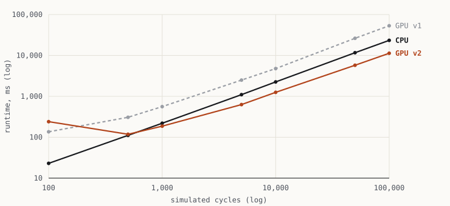
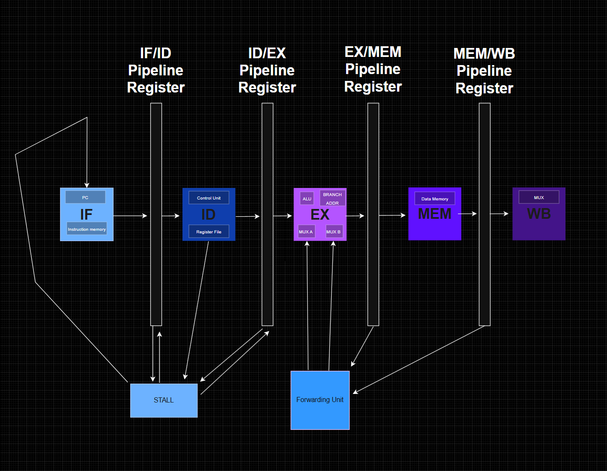

Electrical & Computer Engineering · Georgia Tech
I design hardware, and the tools that build it.
I'm an electrical engineering student at Georgia Tech. In the Sharc Lab I'm building a logic block that spans two stacked dies of a 3D FPGA; on the SiliconJackets team I take a RISC-V CPU from RTL to routed layout. On my own time I build CPUs and the tools that simulate them. This site collects that work, where I want to go, and how I plan to get there.

- Program
- B.S. Electrical Engineering, Georgia Institute of Technology · May 2029 · GPA 3.75
- Focus
- Digital design, computer architecture, physical design, FPGAs
- Now
- Undergraduate researcher, Sharc Lab (3D FPGAs) · ASIC physical design, SiliconJackets
- Toolbox
- SystemVerilog, C++, CUDA, Python, Tcl · Cadence Innovus & Xcelium, Synopsys DC, OpenROAD, Yosys
- Seeking
- Summer 2027 internships in digital design, verification or physical design
Selected work
All projects →-
01
A logic block that spans two layers
Extended VTR and OpenFPGA so one FPGA logic block can split its ten LUTs across two stacked dies, then took it through an ASIC flow and fixed a port-width bug in the LaZagna 3D FPGA framework.

-
03
A logic simulator on the GPU
CUDA gate-level simulator running a 20,170-gate CPU netlist. A persistent-kernel rewrite took it from 2.5× slower than the CPU to 2× faster.

-
04
A 16-bit CPU, from ISA to FPGA
Five-stage pipelined RISC CPU with a custom 12-instruction ISA, forwarding, stalls and branch flushing, running Fibonacci live on a Tang Nano 9K.
